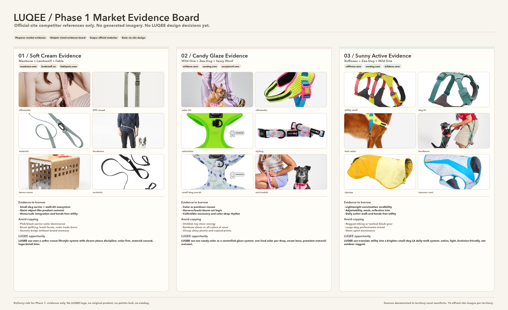
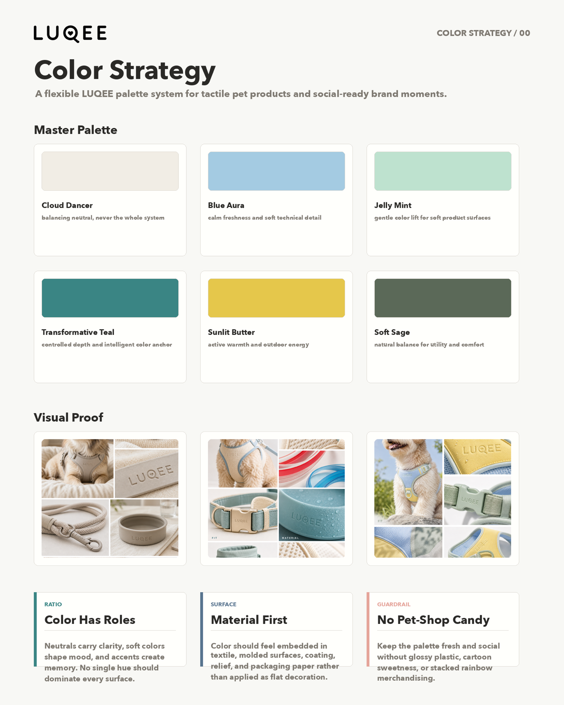
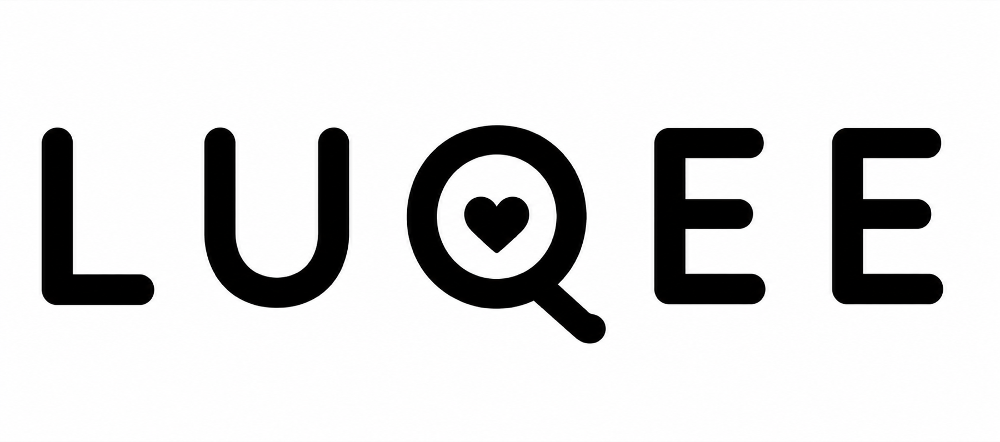
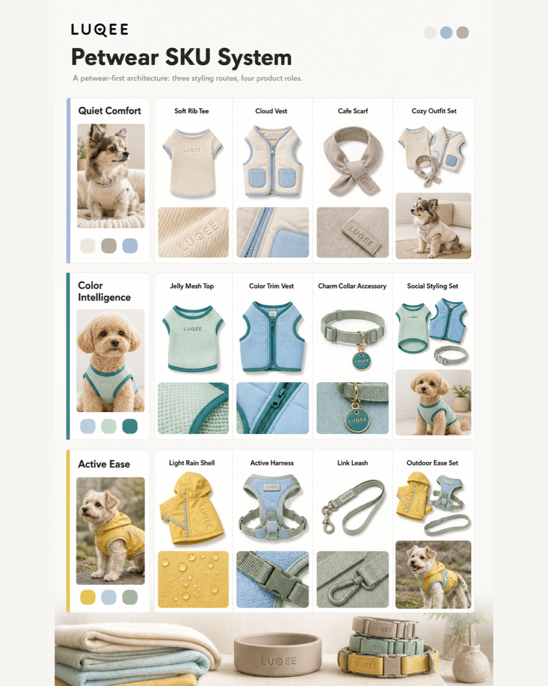

LUQEE process film v2
竖屏 1080×1920 · 约 60 秒 · 7 页 · Claude editorial 主路线 · 单一 mint hazard 强调点。
Vertical re-run of the LUQEE process film, planned under the hyperframes-direction-harness skill.
harness/03_critical_frame_plan.mdlast sync: 2026-05-15 09:25 (agent self-review, no diff)
02_design_direction.md 或 03_critical_frame_plan.md 才视为最终。This is the review artifact, not the final video. Markdown stays the source of truth; HTML annotations must be synced back before final HyperFrames generation.
2. 设计路由 / Design Route
- 主风格 / Primary
-
Claude (Anthropic) — 编辑感羊皮纸画布、warm-only 中性色、serif 标题、ring shadow 深度。
docs/design-router/design-systems/core/claude/DESIGN.md - 辅助 / Accent
-
The Verge (单一 hazard) — 仅在 Page 05 决策门一次性出现 Jelly Mint 强调环。
docs/design-router/design-systems/core/theverge/DESIGN.md - 反路由 / Anti-route
-
xiaohongshu — 太 lifestyle-feed；会稀释"AI 协作的真实品牌过程"的主张。
stripe / linear / openai — 太 SaaS 产品页；与宠物品牌情绪不合。 - 取与不取 / Borrow vs not
-
借用：Claude 的 serif/sans 分工、warm 色板、ring shadow、editorial 留白。
不借用：Claude 的网站导航/模型对比卡/Light-Dark 切换。
借用：Verge 的 Jelly Mint#3cffd0一次。
不借用：Verge 的 Manuka 巨型字、紫色块、StoryStream 节奏。
本次配色 / Run palette
本次字体 / Run typography
| 角色 / Role | 字体 / Font | 尺寸 / Size | 字重 / Weight | 行高 / Line-height |
|---|---|---|---|---|
| Hero 标题 / Serif title | Georgia (Anthropic Serif fallback) | 96–112px | 500 | 1.05 |
| Eyebrow 标签 | Sans (Inter/system) | 22px UPPERCASE | 500 | 1.20 |
| 聊天气泡 · 用户/Codex | Sans | 32px | 500 / 400 | 1.40 |
| 叙述字幕 / Overlay caption | Sans | 36px | 500 | 1.30 |
| 决策 pill 标签 | Sans | 26px UPPERCASE | 600 | 1.10 |
| Timecode / HUD | Sans mono | 18px | 400 | 1.20 |
视觉反模式 / Visual anti-patterns
- 冷调蓝灰 — Claude 系全部 warm-only。
- v1 的绿色
#2e7569作为主色 — 切换到 terracotta#c96442。 - 纯 Inter 字体 — 必须 serif/sans 分工。
- 硬切的标题切换 — 全部 0.3–0.4s crossfade。
- 决策 pill 提前/落后于 msg-06 — 必须词级同步。
- 淡出收尾 — Page 07 必须有 ribbon 印章式的 land。
3. 素材板 / Asset Board
四张真实的 LUQEE 资产 PNG，全部从 v1 项目软链复用，不重绘不修图。




4. 页面时间线 / Page Timeline
每一页 = Entry + Hero + Transition 三个关键帧 + 连续性锚点。
Hook / 品牌锁定
#e8e6dc 规线左→右 wipe，落到 Page 02 chat 面板的顶部边线。
Conversation opens / 对话开始
Step 01 · Evidence / 证据先于品味
Step 02 · Color logic / 色彩即逻辑
Decision gate / 决策门 — the film's peak
Step 03 · SKU architecture / 产品体系
Closer / 收束 — Reconstructed, not faked / 重建，不是伪造
5. 关键帧详情 / Critical Frame Detail
点击页码展开。每一页含 Entry / Hero / Transition + 动画意图 + 连续性契约 + 风险。
01 Hook / 品牌锁定 00:00 – 00:06
叙事段：建立项目身份。Eyebrow 说"这是什么"，serif 标题说"接下来要看什么"。
Frame A · Entry
空 parchment 画布。Grain overlay 0.06。
无前页继承（第 1 页）。
Frame B · Hero
完整标题块 + Chinese 副标题 + terracotta status dot pulsing。
Hero 必须 ≤3s 内可读，决定观众是否留下。
Frame C · Transition
标题渐隐到 0.7；1px 规线从左缘开始 wipe。
规线交给 Page 02 做 chat 面板顶部。
动画意图 / Animation
- Eyebrow 在 0.4s fade + 8px lift。
- Serif 标题 0.9s 起 scale 0.98→1.0 + fade（0.6s）。
- Chinese 副标题 1.6s 起 fade。
- Status dot 三拍脉冲（2.0s / 2.8s / 3.6s），各拍 scale 1.0→1.08→1.0。
- 5.0s 起 1px
#e8e6dc规线左→右 wipe，5.5s 完成。
连续性契约 / Continuity
- 当前锚点：1px 横向规线 + terracotta dot。
- 交给下一页：规线落到 Page 02 chat 面板顶部边线。
- 共享 motif：terracotta dot → Page 02 composer send mark → Page 07 ribbon stamp。
- 不可突变：parchment 背景色、eyebrow 字体、terracotta 色相。
风险 / Risk
- Chinese 副标题如果与英文标题不等权重，会显得是附加物 → mitigation: 同 line-height，0.45 倍 scale。
- Open: 是否在角落加 "60s" 时长芯片，提示短视频承诺？
02 Conversation opens / 对话开始 00:06 – 00:14
叙事段：聊天开始。用户发出原始请求；Codex 表态"不假造原录像"。
Frame A · Entry
Eyebrow 入场；空 chat 面板上滑就位。
Frame B · Hero
msg-01 + msg-02 同框；composer prompt 完成打字"Build LUQEE workflow film."
建立 chat-as-workshop 惯例。
Frame C · Transition
Chat 面板 scale 0.96 + 上抬；规线 wipe 开始。
动画意图 / Animation
- msg-01 在 7.0s fade+lift。msg-02 在 9.0s fade+lift。
- Composer caret 全程 1 Hz blink。Prompt 打字 7.5s→10.5s。
- Ring shadow 在 10.5s 软脉冲一次（面板"完成"信号）。
- 13.4s 规线 wipe。
连续性契约 / Continuity
- 前页锚点：Page 01 规线 → 现在是 chat 面板顶部边线。
- 当前锚点：phone-frame chat 面板 + terracotta composer send mark。
- 交给下一页：chat 面板缩小为右下角 inset，陪伴 Page 03–06。
- 不可突变：气泡 typography、terracotta 色相。
风险 / Risk
- 两条气泡撑 8s 偏静态 → mitigation: composer 打字填空白。
- Open: 是否在 msg-01/02 之间插入 "thinking..." 三点动画？倾向 yes。
03 Step 01 · Evidence / 证据先于品味 00:14 – 00:22
叙事段：Codex 宣告"证据先于品味"。市场证据板作为 hero 出现。
Frame A · Entry
Eyebrow + serif 标题入场；hero card 空 placeholder。
Frame B · Hero
市场证据板完整呈现于 Ivory hero card；ring + whisper shadow 激活。
Frame C · Transition
Hero card 微 1.04 推进；色卡 chip 从板里抽出，飞向下一页。
动画意图 / Animation
- Eyebrow 14.4s，serif 标题 14.9s。
- Hero card 15.5s→16.1s scale 0.96→1.0 + fade。
- 21.0s→21.4s 后推 camera pull-in。
- 21.4s 标题与下一页 0.4s overlap crossfade。修复 v1 的硬切。
连续性契约 / Continuity
- 当前锚点：Ivory hero card + ring shadow 框法（此惯例延续到 04、05、06）。
- 交给下一页：一张色卡 chip 从市场板里抽出。
- 不可突变：素材不修图、不重剪、不重染色。
风险 / Risk
- 市场板是 collage 风格，竖屏小幅可能挤 → mitigation: 6s 净 dwell 给阅读。
04 Step 02 · Color logic / 色彩即逻辑 00:22 – 00:30
叙事段：Codex 把色彩从装饰重新定义为材料逻辑。
Frame A · Entry
Page 03 抽出的色卡 chip 浮在顶部中心；标题入场。
Frame B · Hero
色彩主板 hero card 完整呈现；色卡 chip 落定在卡角。
Frame C · Transition
Camera pull-in；底部出现小型 wordmark 预演。
动画意图 / Animation
- 色卡 chip 23.5s 飞入并落定为卡角标记。
- Card 23.7s→24.3s fade。
- 29.0s pull-in。29.4s 规线 wipe + 标题 crossfade。
连续性契约 / Continuity
- 前页锚点：Page 03 抽出的色卡 chip → 落定为本页卡角标记。
- 交给下一页：底部 wordmark 预演，预示 Page 05 logo lock 到来。
- 不可突变：素材、框法、terracotta 色相。
风险 / Risk
- color_master 宽大于高 → 竖屏会 letterbox。Ivory 框消化掉这个差异，letterbox 带成编辑式留白，不是缺陷。
05 Decision gate / 决策门 — peak of the film 00:30 – 00:40 · 10s
叙事段：Codex (msg-06) 说"决策门：通过/拒绝/待审"。这是全片情感高点 — 真实决策被看见。
Frame A · Entry
标题入场；hero card 与 pill 全部空 placeholder。
从 Page 04 wordmark 预演衔接。
Frame B · Hero · LOGO LOCK
影片的高光时刻。Logo card 居中放大，scale 1.0→1.04，Jelly Mint ring 脉冲 0 0 0 0 #3cffd0 → 0 0 0 8px rgba(60,255,208,0)。
Frame C · Hero+
三个 pill 与 msg-06 词级同步出现：33.8s "approved"、34.5s "rejected"、35.2s "pending"。
修复 v1 的 1s 滞后。
动画意图 / Animation
- Eyebrow 30.4s，标题 31.0s crossfade in。
- Logo card 31.5s→32.5s scale in。
- 33.6s Emphasis 击点：logo card 1.0→1.04→1.0（0.6s），Mint ring 33.4s→34.0s。
- Pills 与 msg-06 词触发同步：33.8s (approved, mint) / 34.5s (rejected) / 35.2s (pending)。
- 39.4s 规线 wipe → Page 06。
连续性契约 / Continuity
- 前页锚点：Page 04 末的小 wordmark 预演 → 长成本页 logo lock hero。
- 当前锚点：logo lockup + 3 stacked pills + mint hazard ring（全片唯一一次）。
- 交给下一页：3 pill cluster 重组为 SKU matrix 的 4 行入场点。
- 不可突变：msg-06 词→pill 同步必须精准；logo PNG 不裁；mint 只用一次。
风险 / Risk
- Mint 是冷调，落在 warm-only 系统上 → mitigation: 单次出现，仅 hazard ring + 1 pill dot，不做背景。
- logo PNG 在 v1 偏小，放大可能露 artifact → mitigation: card padding + ring 框法软化任何瑕疵。
06 Step 03 · SKU architecture / 产品体系 00:40 – 00:50 · 10s
叙事段：Codex (msg-07) 把矩阵映射为四个可售产品系统。
Frame A · Entry
标题入场；SKU card 空 placeholder；前页 3 pill 重组为 4 行雏形。
Frame B · Hero
SKU 矩阵完整呈现于 hero card；4 行 0.3s 错峰微高亮（43.5s→44.7s）。
最长 7s 净 dwell，给信息密度留时间。
Frame C · Transition
Late pull-in；标题 crossfade；wordmark 在顶部预演进入 Page 07。
动画意图 / Animation
- Eyebrow 40.4s，标题 41.0s。
- Card 41.5s→42.1s fade。
- 4 行 SKU 一一微高亮 43.5s→44.7s（克制，不闪烁）。
- 49.0s pull-in，49.4s 规线 wipe + 标题 crossfade。
连续性契约 / Continuity
- 前页锚点：3 pill cluster → 4 行 SKU 入场雏形。
- 交给下一页：wordmark 在顶部预演进入 Page 07。
- 不可突变：素材不裁；4 行高亮微妙不张扬。
风险 / Risk
- SKU 矩阵在竖屏小幅可能看不清 → mitigation: 7s 净 dwell。若仍不清晰，在审查后加 row callout。
07 Closer / 收束 — Reconstructed, not faked 00:50 – 01:00 · 10s
叙事段：用户 msg-08 + Codex msg-09 收束。Premium · fashion-forward · technical。Agent-assisted, not automated。
Frame A · Entry
标题渐入；msg-08 气泡入场。
Frame B · Hero
标题完整；msg-08 + msg-09 同框。Wordmark + terracotta ribbon 准备入场。
Frame C · LAND · STAMP
第三幕落点。Terracotta ribbon 横扫 0→100%（0.8s）；wordmark scale 0.96→1.0；之后冻结 1.5s。
动画意图 / Animation
- 50.4s 标题与 Page 06 crossfade。
- 51.5s msg-08 reveal。54.0s msg-09 reveal。
- 52.5s wordmark fade in 准备就位。
- 58.0s→58.8s ribbon scale-X 入场；58.2s→58.8s wordmark scale 0.96→1.0。
- 58.8s→60.0s 静止 hold ≥ 1.5s — 无淡出。
连续性契约 / Continuity
- 前页锚点：SKU card 软退；wordmark 顶部预演 → 落到本页底部 stamp。
- 当前锚点：标题 + msg-08/msg-09 + wordmark stamp + terracotta ribbon。
- 共享 motif：terracotta 闭环 — Page 01 dot → Page 02 send mark → Page 07 ribbon。Mint 不回来。
- 不可突变：必须静止 hold ≥1s 收尾。
风险 / Risk
- "Reconstructed, not faked" 略偏内部 → decide at this review。如果换，备选："Process, made visible / 过程，可见"。
- Open: 最终 eyebrow 是 "LUQEE · 路客" 还是仅 "LUQEE"？倾向双语。
6. 全局动画意图 / Global Animation Notes
- 节奏 / Rhythm：每页一个 hero entry。无二次舞台。
- 入场 / Entrance：Eyebrow → serif 标题 → hero 素材 → chat 气泡。各元素 0.3–0.6s smoothstep。
- 强调 / Emphasis：仅 Page 01 status dot 三脉冲、Page 05 logo lock 1.0→1.04 + mint ring、Page 07 ribbon stamp。其余页面克制。
- 镜头 / Camera：仅 Page 03/04/06 末段微 1.04 pull-in。无 parallax、无 float。
- 转场 / Transition：1px
#e8e6dc规线左→右 wipe (0.45s) 在每一页边界。规线是连续性锚 — 不消失，只移动。 - 克制 / Restraint：无 bouncy easing。所有 easing 均 smoothstep。Mint 仅 Page 05 出现一次。
- 标题切换 / Title transitions：0.4s overlap crossfade — 修复 v1 的硬切。
- 词级同步 / Word sync：Page 05 三个 pill 与 msg-06 词触发对齐 — 修复 v1 的 1s 滞后。
- 无淡出收尾 / No fade-out：Page 07 最后静止 hold ≥1.5s — 修复 v1 的软淡出。
7. 全局连续性契约 / Continuity Contract
| 边界 / Boundary | 前锚 / From | 桥 / Bridge | 后锚 / To |
|---|---|---|---|
| 01 → 02 | 1px 规线 + terracotta dot | 规线 wipe | Chat 面板顶部边线 |
| 02 → 03 | Chat 面板 | 面板缩小到右下角 inset | 右下角 chat inset 持续陪伴 |
| 03 → 04 | 市场板里的一个色卡 chip | 色卡 chip 飞入 | 色卡 chip 落定为 color_master 卡角标记 |
| 04 → 05 | 底部 wordmark 预演 | wordmark 长大 | Logo lock 大特写 hero |
| 05 → 06 | 3 pill cluster | pills 重组为 4 行雏形 | SKU 矩阵 4 行入场 |
| 06 → 07 | SKU card 软退 | wordmark 顶部预演 | 底部 wordmark stamp |
颜色 motif 闭环 / Color motif loop
Terracotta 在 Page 01 → 02 → 07 形成闭环（dot → send mark → ribbon stamp）。
Mint 仅在 Page 05 出现，作为单次 hazard。不重复回来。
这条规则不可破。
8. HyperFrames 准备度 / HyperFrames Readiness
设计方向已锁定 / Design direction locked02_design_direction.md 已写，引用 Claude + Verge 本地源路径。
Hero layouts 已定义 / Hero layouts defined7 页各有 Hero frame；Page 05 与 Page 07 是 emphasis hero。
动效说明是导演级 / Motion notes directional无 GSAP 代码；smoothstep + emphasis 击点描述清楚。
页面转场已命名 / Page transitions named1px 规线 wipe 是全局转场语言。
素材处理方式已指定 / Asset treatments specifiedIvory card + 32px padding + 16/24px radius + ring shadow。
关键帧已落到每页 / Critical frames per pageEntry · Hero · Transition；Page 05 / 07 含 emphasis 击点。
连续性契约具体 / Continuity is concrete每页都有命名的视觉锚（不是"更顺滑"这种空话）。
用户审查通过 / User review pass用户 2026-05-14 20:31 "Approved, proceed" + agent 2026-05-15 09:25 self-review (v3 Review Definition). 双重审查通过.
HyperFrames 检查计划 / Final HyperFrames checks planned渲染前将运行 lint / validate / inspect / snapshot / render。已在 04_render_plan.md 注明.
HTML 修改已同步回 Markdown / Sync无设计修改产生。同步日志条目已写入 02_design_direction.md 和 03_critical_frame_plan.md 的 Review Notes 表.
9. 素材使用 / Asset Usage
| 素材 / Asset | 类型 / Type | 使用页 / Pages | 叙事作用 / Role | 风险 / Risk |
|---|---|---|---|---|
| assets/market_evidence_board.png | image (collage) | 03 | "证据先于品味" hero — 6s 净 dwell | Collage 风格小幅可能挤；mitigation: 净 dwell |
| assets/color_master.png | image (palette board) | 04 | "色彩即逻辑" hero；色卡 chip 抽出为连续性锚 | 宽大于高，竖屏 letterbox；mitigation: Ivory 框消化 |
| assets/logo_luqee_final.png | image (logo lockup) | 05 (hero), 07 (stamp callback) | Page 05 logo lock + mint ring 击点；Page 07 wordmark 印章 | 原图偏小，放大；mitigation: card padding + ring 框法 |
| assets/sku_system_final.png | image (matrix) | 06 | "system, not aesthetic" hero — 7s 最长 dwell | 信息密度高；mitigation: 最长 dwell；若不清晰加 callout |
所有素材均来自示例目录 assets/ — 无重绘、无修图、无 AI 生成替身。
10. 审查与同步 / Review and Sync
审查员意见 / Reviewer notes
— 待用户填写 / pending user input —
待同步修改 / Pending changes
— 无 / none —
同步状态 / Sync status
| 时间 / Time | 来源 / Source | 修改 / Change | 已同步 / Synced |
|---|---|---|---|
| 2026-05-14 20:24 | (initial) | 方向审查板首次生成 / Initial direction board generated | REVIEW |
| 2026-05-14 20:31 | user / chat | "Approved, proceed" — 无设计修改 / no design changes requested | YES |
| 2026-05-15 09:25 | agent self-review (v3 hardened skill) | 结构性审查通过：9 h2 sections + header, 4/4 LUQEE PNG = HTTP 200, 7 page-detail blocks 1:1 with critical-frame plan, 两条 Design Router 本地路径已引用, 无 console error (pure CSS). 无修改产生。 | YES |
同步规则 / Sync rule
Markdown (02_design_direction.md, 03_critical_frame_plan.md) 是 source of truth。
审查板内修改必须先回写到 Markdown 再视为最终。
Ready gate（第 8 节）需全部 checked 才允许进入 04_render_plan.md。